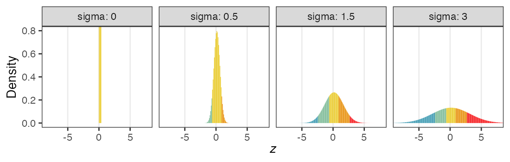
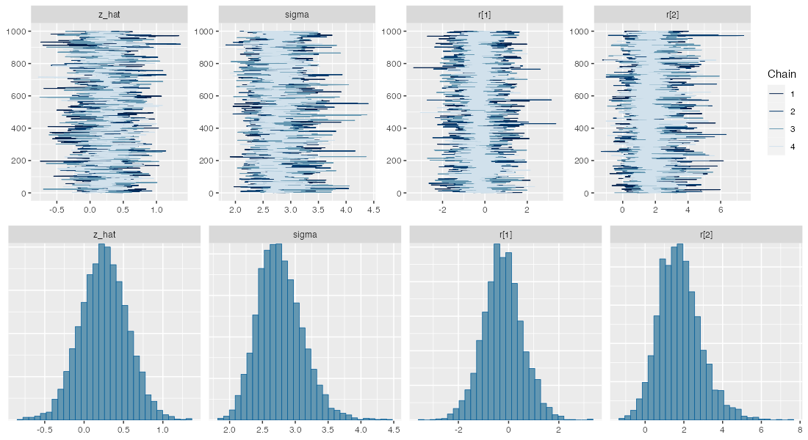
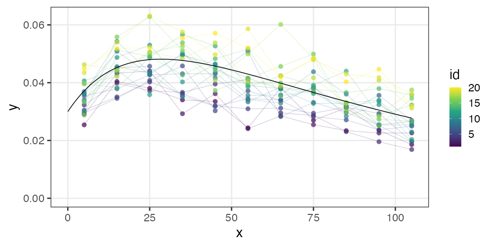

統計モデリング実習 2022 TMDU
東北大学 生命科学研究科 進化ゲノミクス分野 特任助教
(Graduate School of Life Sciences, Tohoku University)
(Graduate School of Life Sciences, Tohoku University)
- 導入、直線回帰
- 確率分布、擬似乱数生成
- 尤度、最尤推定
- 一般化線形モデル (GLM)
- 個体差、一般化線形混合モデル (GLMM)
- ベイズの定理、事後分布、MCMC
- StanでGLM
- 階層ベイズモデル (HBM)
2023-04-01 東京医科歯科大学
https://heavywatal.github.io/slides/tmd2022stats/
https://heavywatal.github.io/slides/tmd2022stats/
GLMMで登場した個体差を階層ベイズモデルで

GLMMで登場した個体差を階層ベイズモデルで
植物100個体から8個ずつ種子を取って植えたら全体で半分ちょい発芽。
親1個体あたりの生存数はn=8の二項分布になるはずだけど、
極端な値(全部死亡、全部生存)が多かった。個体差？

個体差をモデルに組み込みたい
各個体の生存率$p_i$をそのままパラメータにすると過剰適合。
「パラメータ数 ≥ サンプルサイズ」の“データ読み上げ”モデル。
i.e., この個体は4個生き残って生存率0.5だね。次の個体は2個体だから……
個体の生存能力をもっと少ないパラメータで表現できないか？
個体差をモデルに組み込みたい
各個体の生存率$p_i$が能力値$z_i$のシグモイド関数で決まると仮定。
その能力値は全個体共通の正規分布に従うと仮定:
$z_i \sim \mathcal{N}(\hat z, \sigma)$

パラメータ2つで済む: 平均 $\hat z$, ばらつき $\sigma$ 。
前者は標本平均 $\hat p$ から求まるとして、後者どうする？
個体能力のばらつき $\sigma$ が大きいと両端が増える
普通の二項分布は個体差無し $\sigma = 0$ を仮定してるのと同じ。


zの値で色分けしてみると想像しやすい
正規分布と二項分布の混ぜ合わせ……?

階層ベイズモデルのイメージ図
事前分布のパラメータに、さらに事前分布を設定するので階層ベイズ
さっきの図をStan言語で記述すると
10 とか 3 とか、エイヤっと決めてるやつが超パラメータ。
data {
int<lower=0> N;
array[N] int<lower=0> y;
}
parameters {
real z_hat; // mean ability
real<lower=0> sigma; // sd of r
vector[N] r; // individual difference
}
transformed parameters {
vector[N] z = z_hat + r;
vector[N] p = inv_logit(z);
}
model {
y ~ binomial(8, p);
z_hat ~ normal(0, 10);
r ~ normal(0, sigma);
sigma ~ student_t(3, 0, 1);
}
変量効果が入った推定結果
seeds_data = list(y = df_seeds_od$y, N = samplesize)
model = cmdstan_model("stan/glmm.stan")
fit = model$sample(data = seeds_data, seed = 19937L, step_size = 0.1, refresh = 0)
draws = fit$draws(c("z_hat", "sigma", "r[1]", "r[2]"))
variable mean median sd mad q5 q95 rhat ess_bulk ess_tail
lp__ -455.60 -455.30 9.34 9.25 -471.31 -441.11 1.00 784 1292
z_hat 0.25 0.25 0.30 0.30 -0.24 0.74 1.00 777 1266
sigma 2.77 2.75 0.34 0.33 2.26 3.37 1.00 1145 1581
r[1] -0.23 -0.25 0.78 0.74 -1.51 1.08 1.00 3484 2638
r[2] 1.79 1.72 1.09 1.06 0.17 3.78 1.00 4776 2441
r[3] 1.74 1.65 1.07 0.99 0.17 3.66 1.00 4304 2656
r[4] -3.73 -3.54 1.60 1.49 -6.69 -1.51 1.00 4847 2537
r[5] -2.20 -2.13 1.02 1.01 -4.00 -0.65 1.00 4411 2449
r[6] -2.17 -2.10 1.02 0.95 -4.00 -0.64 1.00 4336 2545
r[7] 0.92 0.90 0.87 0.85 -0.45 2.40 1.00 4167 2377
# showing 10 of 303 rows (change via 'max_rows' argument or 'cmdstanr_max_rows' option)
抜粋して作図。悪くない。
データ生成の真のパラメータ値は $\hat z = 0.5,~\sigma = 3.0$ だった。
`stat_bin()` using `bins = 30`. Pick better value with
`binwidth`.

🔰 階層ベイズモデルの練習問題: 種の数
100個体の植物から8つずつ種を取った、のデータでやってみよう。
sigmoid = function(x, gain = 1) {1 / (1 + exp(-gain * x))}
samplesize = 100L
df_seeds_od = tibble::tibble(
z = rnorm(samplesize, 0.5, 3),
p = sigmoid(z),
y = rbinom(samplesize, 8L, p))
🔰 階層ベイズモデルの練習問題: ビール注文数
samplesize = 300L
lambda = 3
overdisp = 4
.n = lambda / (overdisp - 1)
.p = 1 / overdisp
df_beer_od = tibble::tibble(
X = rnbinom(samplesize, size = .n, prob = .p)
)

非線形回帰の例: データ
刺激強度xに対する応答強度yを20個体調査。
非対称なひと山。応答変数も説明変数も正の値。
\[\begin{split}
y = ae ^ {-bx} - ce ^ {-dx}
\end{split}\]

非線形回帰の例: Stanコード
さっきの数式を model ブロックに書く。
data {
int<lower=1> N;
vector[N] x;
vector[N] y;
int id[N];
int<lower=1> Ninds;
}
parameters {
real<lower=0> a;
real<lower=0> d;
real<lower=0,upper=a> c;
real<lower=0,upper=d> b;
real shape;
vector[Ninds] intercept;
}
model {
vector[N] mu = a * exp(-b * x) - (a - c) * exp(-d * x) + intercept[id];
y ~ gamma(shape, shape ./ mu);
a ~ normal(0, 100);
b ~ normal(0, 100);
c ~ normal(0, 100);
d ~ normal(0, 100);
shape ~ normal(0, 100);
intercept ~ normal(0, 0.005);
}
階層ベイズモデルのほかの応用先
- 時系列モデル (状態空間モデル)
- 空間構造のあるモデル (e.g., CARモデル)
- 欠損値の補完
ベイズ推定まとめ
- 条件付き確率 $\text{Prob}(B \mid A)$ の理解が大事。
- 事後分布 $\propto$ 尤度 ⨉ 事前分布
- 確信度合いをデータで更新していく。
- 推定結果は分布そのもの。
- そこから点推定も区間推定も可能。
- 解析的に解けない問題は計算機に乱数を振らせて解く。
- MCMCサンプル $\sim$ 解きにくい事後分布
- 理論・技術の進歩が目覚ましい。
回帰分析ふりかえり
より柔軟にモデルを記述できるようになった。計算方法も変化。
全体まとめ
- 統計とは、データをうまくまとめ、それに基づいて推論するための手法。
- モデルには理解志向と応用志向があり、統計モデルは前者寄り。
- どちらも多少は分かった上で使い分けたい。
- どっちにしろ真の正しい何かではない。
- 確率分布とその背後にある確率過程の理解が重要。
- 乱数生成→作図を繰り返してイメージを掴もう。
- MCMCサンプリングも事後分布からの乱数生成。
- 本講義で「統計モデリングを完全に理解した」とは言えない。
- 理論も実践もほとんど説明していない。
- 本を読む準備ができた、くらいの気持ち？
参考文献
- データ解析のための統計モデリング入門 久保拓弥 2012
- StanとRでベイズ統計モデリング 松浦健太郎 2016
- RとStanではじめる ベイズ統計モデリングによるデータ分析入門 馬場真哉 2019
- データ分析のための数理モデル入門 江崎貴裕 2020
- 分析者のためのデータ解釈学入門 江崎貴裕 2020
- 統計学を哲学する 大塚淳 2020